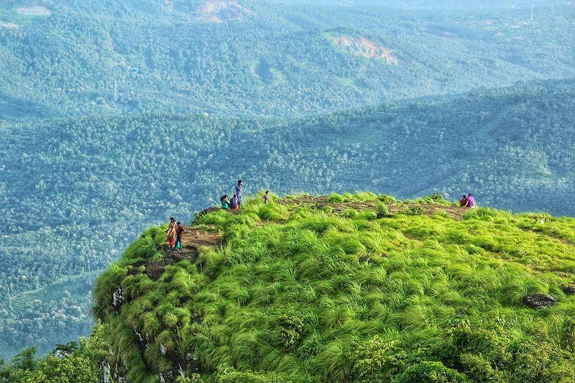

Muzhappilangad Beach

Muzhappilangad Drive-in Beach (3.8 Kms length) is a beach on the Malabar Coast in the district of Kannur in the state of Kerala in southwestern India.
Palakkayam Thattu
This spot is a misty peak in the Western Ghats that stands at 3500 feet above sea level. The Western Ghat Mountain Ranges are known for their diverse biota.
Fort St. Angelos
St. Angelo Fort (also known as Kannur Fort or Kannur Kotta) is a fort facing the Arabian Sea, situated 3 km from Canannore (Kannur), a city in Kerala state, south India.
Peralassery Sri Subramanya Temple
The Peralassery Sri Subrahmanya Temple is considered as an ancient temple, it is popularly believed that this place of worship was built by Lord Rama himself. The presiding deity of the temple is the serpent form of Lord Subrahmanya.
Parassinikkadavu Snake Park
The Parassinkkadavu Snake Park is located in Anthoor Municipality about 16 kilometres from Kannur Corporation in the Kannur district of north Kerala, in south India.
Thottada Beach

Thottada is a census town and suburb of Kannur city situated on NH 66 of about 8 km (5.0 mi) south of Kannur railway station in Kerala State, India.